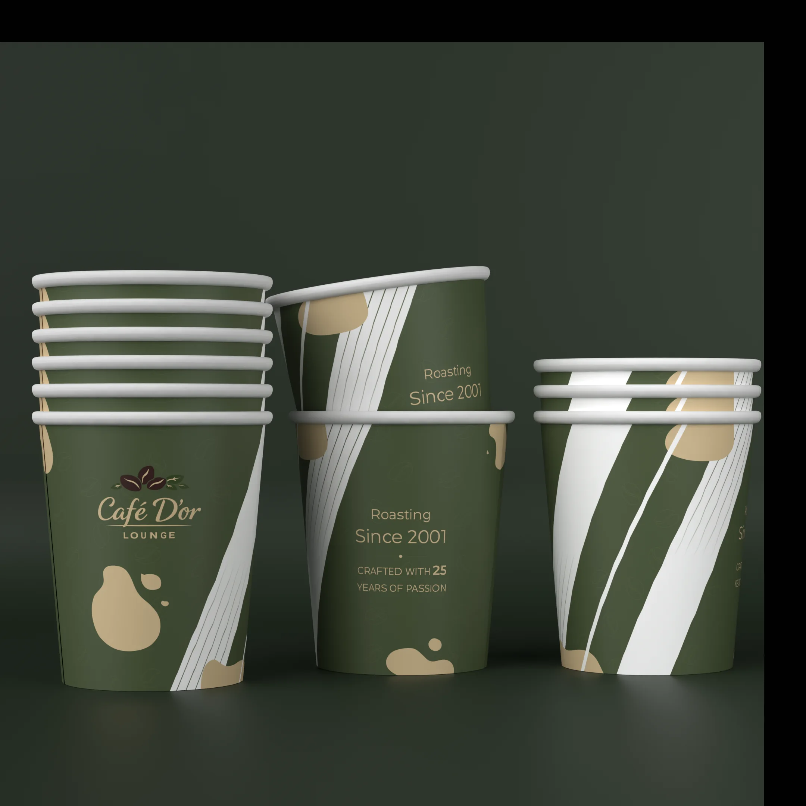

Packaging Systems
Café D’or
A coordinated packaging family spanning coffee, ice cream, crepes, carriers and takeaway formats.

Challenge
Extend an established café identity across very different packaging structures while keeping every item recognizably part of one family.
Approach
Deep green, warm beige and fluid organic shapes create continuity across cups, boxes, trays and carriers.
Coffee cupsIce cream cupsCrepe packagingCarriersTraysProduction dielines